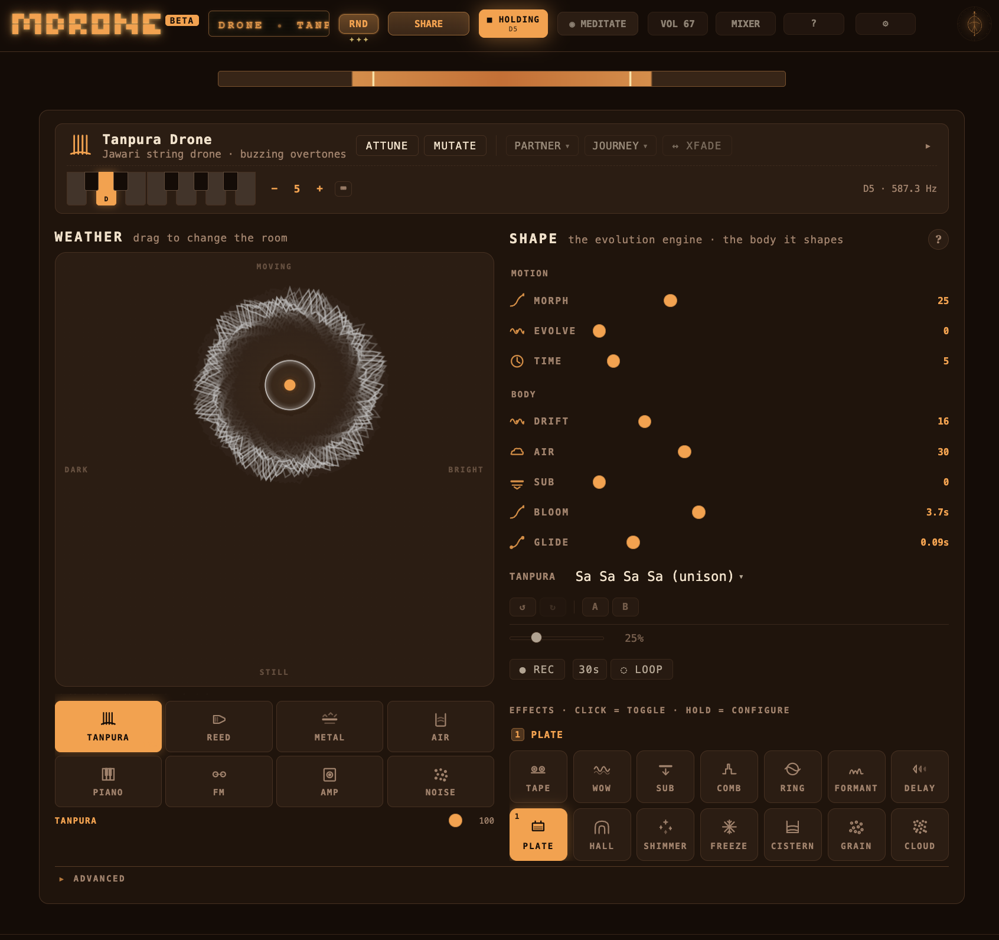

A microtonal drone instrument.
Local-first. The music stays in your browser unless you decide to share it.

An instrument built around one sustained tone. Layered voices, slow weather, microtonal tuning, a long reverb tail, and two slow modulators, so a held note stays interesting for hours. No clock, no beats, no quantize.
What is a drone?
A drone is one sustained tone — or a small set of tones — held for a long time. There's no melody chasing across the top, no beat pushing it forward. A note simply stays, and its colour and texture shift slowly underneath.
You've heard drones all your life: the steady hum under Indian classical music, the bagpipe's low note beneath every reel, the long chords of ambient records, the ringing of Tibetan bowls. Drone music as a modern genre runs through La Monte Young, Pauline Oliveros, Éliane Radigue, Catherine Christer Hennix, and Stars of the Lid — composers who treat a single held sound as a whole piece.
What does microtonal mean?
A piano splits the octave into twelve equal steps. Most of the world's music doesn't. The intervals of Indian ragas, Arabic maqamat, Javanese gamelan, and every historical European tuning Bach wrote for sit between the piano's keys.
mdrone ships twenty-two tuning systems — Pythagorean, Kirnberger III, just intonation, 31-TET, Yaman, Bayati, Pelog, and more — so you can hold a sustained fifth in one tuning, switch to another, and hear the difference. On a held drone those differences are striking.
What happens when you open it?
A welcome drone begins as soon as you tap HOLD. You can leave it there. It will breathe and drift on its own for hours. Or you can shape it: drag the weather pad for brightness and motion, stack voices, apply effects, change the tuning. There is no wrong way, and nothing has to happen on a clock.
Do I need to know music theory?
No. Every control makes one audible change. A RND button hands you a fresh starting scene any time. Music theory helps if you want to author your own tunings or understand why a particular interval sounds the way it does — but ignoring it costs nothing. Most of the pleasure of a drone is listening, not analysing.
Why in a browser?
No install, no account, no sign-up. The sound is synthesised on your device in real time — no sample libraries, no server. Your sessions stay in your browser's local storage. When you share a scene, it travels as a URL, not as a file on someone else's computer. It works on any modern phone, tablet, or laptop, and it's free.